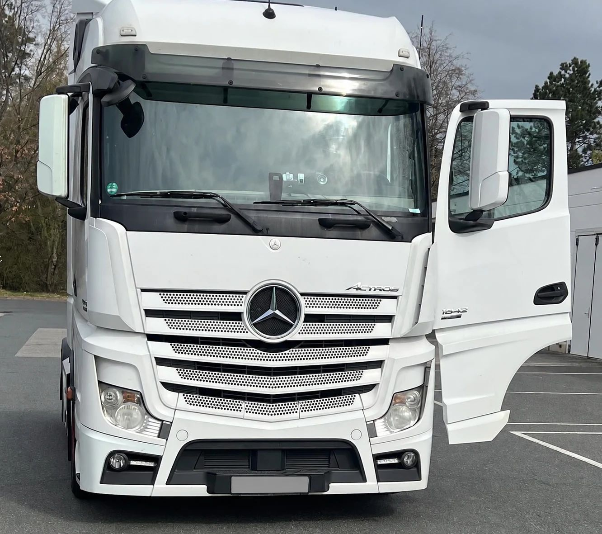

Getränke für den Großmarkt, Baustoffe für den Fachhandel, Heizöl für die Wohngebiete, Wechselbrücken zwischen zwei Lagern: Diese Fahrten sind zu schwer für einen Atego und zu kurz für einen Fernverkehrs-LKW. Genau dafür hat Mercedes-Benz 2012 den Antos auf den Markt gebracht, nach eigenen Angaben den ersten schweren LKW, der von Anfang an für den Verteilerverkehr entwickelt wurde.
Wir bringen über 30 Jahre Erfahrung im Fahrzeughandel mit, und der Antos gehört zu den LKW, die uns Speditionen und Händler regelmäßig anbieten. In diesem Beitrag erklären wir, was ihn ausmacht, wie Sie ihn von Atego und Actros unterscheiden und worauf es beim Verkauf ankommt.
Was ist der Antos?
Der Antos ist der schwere Verteiler von Mercedes-Benz. Er wurde im September 2012 auf der IAA Nutzfahrzeuge in Hannover vorgestellt und im Werk Wörth gebaut (Auto-Medienportal). Sein Bereich sind vor allem 18 bis 26 Tonnen zulässiges Gesamtgewicht im Regionalverkehr: viele Stopps am Tag, abends zurück zum Betrieb.
Der Antos stammt von derselben Plattform wie der Actros ab 2011 und der Arocs. Mercedes-Benz hatte seine schweren LKW damals in drei Baureihen aufgeteilt: Actros für den Fernverkehr, Antos für den schweren Verteilerverkehr und Arocs für die Baustelle. Mit dem Antos verschwanden in Europa die leichteren Modelle des Axor, der diese Arbeit vorher gemacht hatte.
Den Namen Antos führt Mercedes-Benz inzwischen nicht mehr. Den schweren Verteilerverkehr deckt heute der Actros mit kurzen und mittleren Fahrerhäusern ab (Mercedes-Benz Trucks). Wann genau der Name aus dem Programm verschwand, geben die Quellen unterschiedlich an. Für einen gebrauchten Antos spielt das keine Rolle: In den Papieren steht weiter Antos.
Antos, Atego oder Actros?
Die drei Baureihen überschneiden sich, haben aber jeweils einen klaren Schwerpunkt:
- Atego: leicht und mittel, von 6,5 bis 16 Tonnen. Der klassische Verteiler in der Stadt, mit Vier- oder Sechszylinder.
- Antos: schwer, vor allem 18 bis 26 Tonnen. Regionaler Verteilerverkehr mit vielen Stopps und schweren Lasten.
- Actros: schwer, vor allem Fernverkehr. Große Fahrerhäuser zum Übernachten, meist als Sattelzugmaschine.

Wer mehr über die leichtere Baureihe wissen möchte, findet alles in unserem Beitrag zum Mercedes-Benz Atego.
Woran erkennt man einen Antos?
Auf den ersten Blick sieht ein Antos aus wie ein Actros der Baureihe ab 2011. Das Fahrerhaus stammt aus derselben Familie, auch Cockpit und Motoren sind verwandt. Die Unterschiede liegen im Detail:
- Der Schriftzug. „Antos“ steht vorne im Grill neben dem Stern und an der Tür.
- Das Fahrerhaus. Alle Fahrerhäuser des Antos sind 2,30 Meter breit, in kurzer Ausführung mit 1,70 Meter Länge oder in mittlerer mit 2,00 Meter. Lange Fernverkehrskabinen mit Hochdach und 2,50 Meter Breite gibt es beim Antos nicht.
- Die Papiere. In der Zulassungsbescheinigung Teil I steht unter D.3 die Handelsbezeichnung. Damit ist die Sache eindeutig.

Was bedeuten 1840 oder 2543?
Wie bei allen Mercedes-Benz LKW ist die Zahl an der Tür eine Kurzbeschreibung. Die ersten beiden Ziffern stehen für das zulässige Gesamtgewicht in Tonnen, die letzten beiden für die Motorleistung in PS, geteilt durch zehn:
- Antos 1840: rund 18 Tonnen, rund 400 PS, ein Zweiachser
- Antos 2543: rund 25 Tonnen, rund 430 PS, ein Dreiachser (Eurotransport)
Buchstaben hinter der Zahl beschreiben die Ausführung, etwa LS für Sattelzugmaschine. Welches Gewicht und welche Leistung Ihr Antos genau hat, steht in der Zulassungsbescheinigung Teil I.
Motoren, Getriebe und Varianten
Unter dem Fahrerhaus arbeiten dieselben Motorfamilien wie im Actros und Arocs: vom 7,7-Liter-Sechszylinder mit 238 PS bis zu den großen Reihensechszylindern mit 10,7 und 12,8 Liter Hubraum. Die meisten erfüllen Euro VI. Serienmäßig schaltet das automatisierte Getriebe PowerShift 3.
Dazu kamen zwei Ausführungen für besondere Aufgaben:
- Antos Loader: gewichtsoptimiert, damit mehr Nutzlast bleibt. Gedacht für Tank, Silo und alles, was nach Gewicht abgerechnet wird.
- Antos Volumer: mit niedrigem Rahmen für mehr Ladevolumen, etwa für Wechselbrücken oder große Kofferaufbauten.
Als Fahrgestell gab es den Antos in sehr vielen Radständen, damit jeder Aufbau passt: Pritsche mit Ladekran, Getränkeaufbau, Tank, Kühlkoffer oder Abrollkipper. Als Sattelzugmaschine fährt er im Nahverkehr vor allem mit Tank-, Silo- oder Kühlaufliegern.
Was ist ein gebrauchter Antos heute wert?
Oft weniger, als Verkäufer erwarten. Der Antos ist modern und wirtschaftlich, aber diese Punkte drücken den Preis:
- Der Aufbau bestimmt den Käufer. Ein Getränkeaufbau, ein Tank oder ein Kühlkoffer passt nur zu Betrieben, die genau das brauchen. Je spezieller der Aufbau, desto kleiner der Kreis der Interessenten.
- Das Angebot. Große Verteilerflotten tauschen ihre Fahrzeuge nach festen Zyklen aus, oft viele auf einmal. Käufer haben die Auswahl und vergleichen genau.
- Die Maut. Seit Dezember 2023 enthält die LKW-Maut einen CO2-Aufschlag. Fahrzeuge ohne CO2-Zertifizierung, also praktisch alle vor 2019 gebauten, landen in der teuersten CO2-Klasse (Bundesregierung). Das betrifft einen großen Teil der Antos.
- Inseratspreise sind keine Verkaufspreise. Was in Online-Börsen steht, ist der Wunsch des Verkäufers. Der tatsächlich erzielte Preis liegt nach der Verhandlung meist darunter, und viele Fahrzeuge stehen dort monatelang.
- Der Weg ins Ausland kostet. Viele gebrauchte Verteiler-LKW finden ihre Käufer im Ausland. Transport, Papiere und Zoll kosten Geld, das in jeden Ankaufspreis einfließt.
Ein Verkauf lohnt sich trotzdem fast immer. Ein Antos, der nicht mehr gebraucht wird, kostet jeden Monat Steuer, Versicherung und Stellplatz und verliert weiter an Wert. Wer ihn verkauft, solange er noch im Einsatz ist, erzielt in der Regel das bessere Ergebnis.
Wir kaufen Antos aller Baujahre
Die ECS Exclusive Commerce Services GmbH aus Gehrden bei Hannover kauft Antos an: Fahrgestelle mit Pritsche, Koffer, Kühlaufbau, Tank oder Abrollkipper und Sattelzugmaschinen, einzeln oder als ganzen Fuhrpark. Weil wir Nutzfahrzeuge auch exportieren, finden wir oft auch für Fahrzeuge mit speziellem Aufbau einen Abnehmer. Welche Fahrzeuge wir sonst noch ankaufen, sehen Sie unter Was wir ankaufen.
So läuft es ab:
- Sie rufen uns an, schreiben uns per WhatsApp oder senden uns eine E-Mail.
- Sie nennen uns Typ, Erstzulassung, Kilometerstand, Aufbau und Standort und schicken ein paar Fotos.
- Wir machen Ihnen ein konkretes Angebot.
- Nach Ihrer Zusage erstellen wir den Kaufvertrag und schließen das Geschäft ab.
- Wir holen den Antos ab, deutschlandweit.
Mehr zum Ablauf lesen Sie unter Unsere Arbeit. Sie möchten Ihren Antos verkaufen? Schreiben Sie uns oder rufen Sie an.
Hinweis: Dieser Beitrag dient der allgemeinen Information und ersetzt keine Rechts- oder Steuerberatung. Alle Angaben ohne Gewähr, Stand: 2. November 2026. Genannte Marken und Modellbezeichnungen gehören ihren jeweiligen Inhabern. Die ECS GmbH ist ein unabhängiger Händler und steht in keiner Verbindung zu den Herstellern.